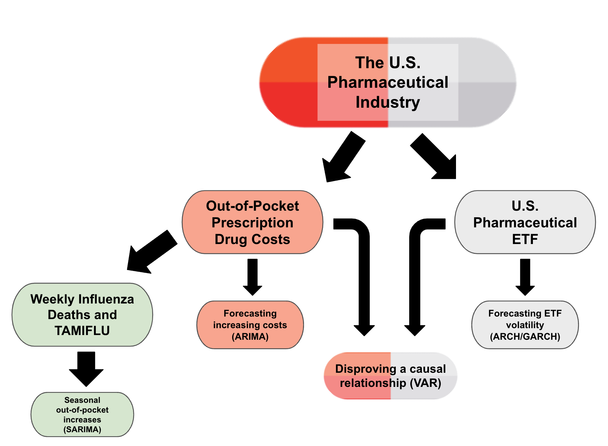
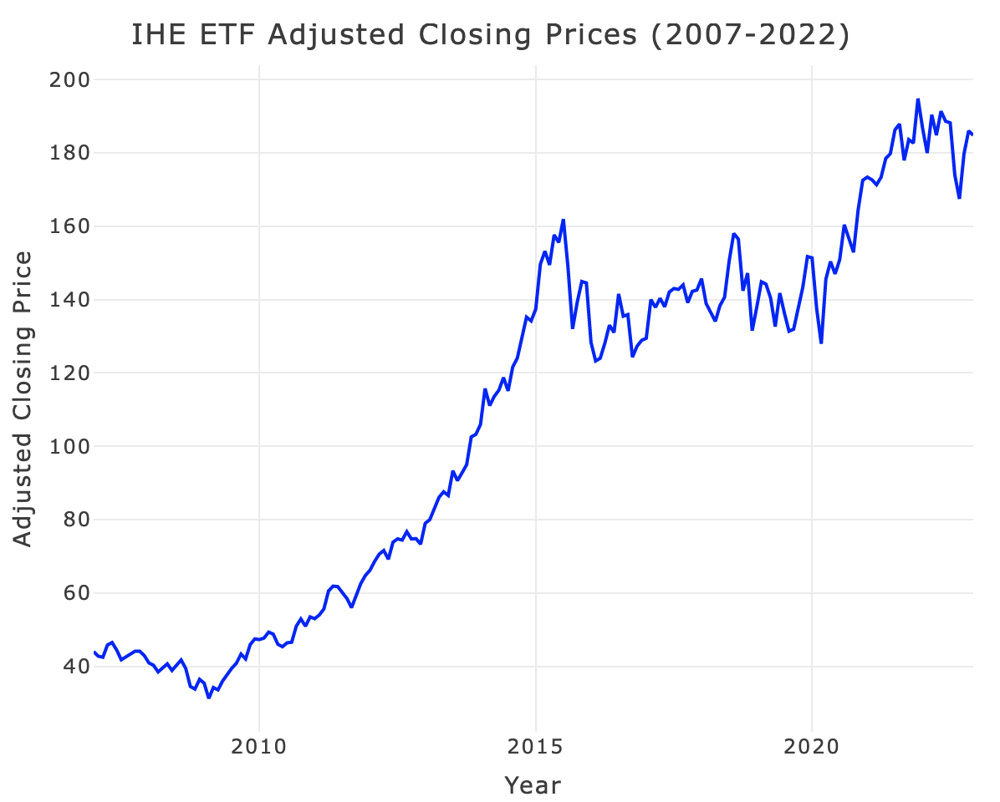
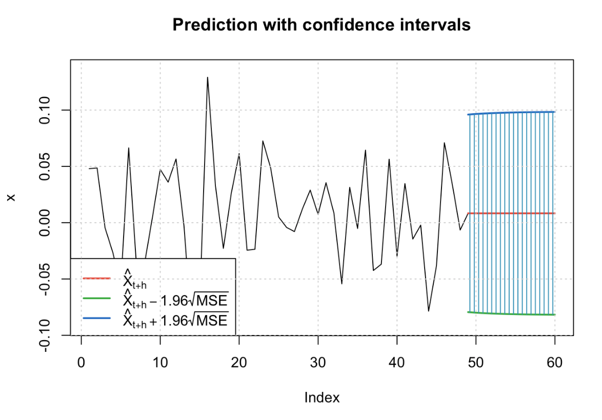
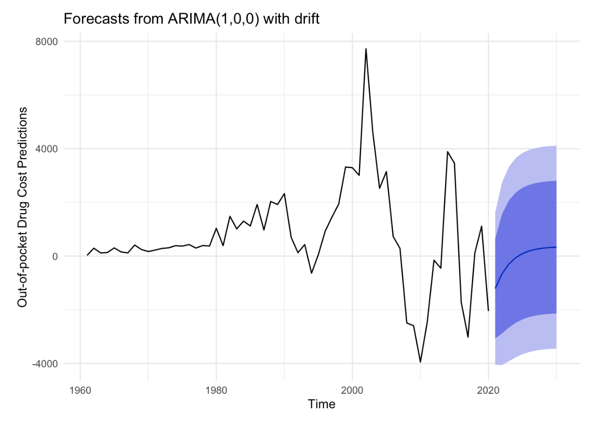
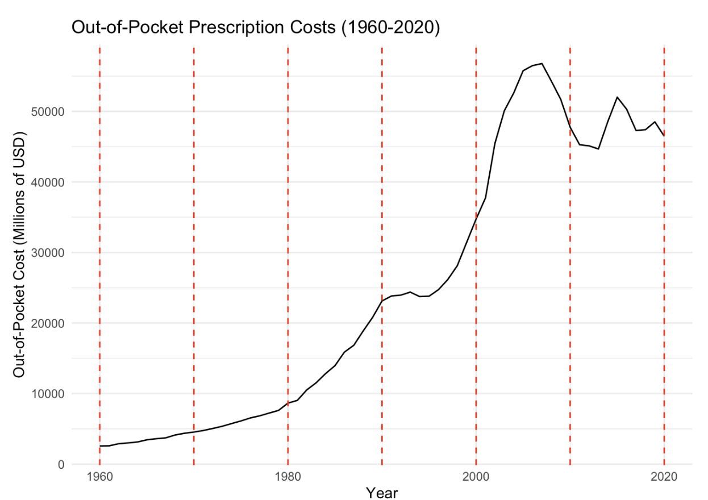

Conclusions
Below, I have created a diagram representing the overall summary of this portfolio project.

The purpose of this portfolio project was to perform an analysis on the U.S. pharmaceutical industry through the use of time series methods. To do this, I believed it was crucial to break my analysis into two overarching sections, the first focusing on the American consumer and purchaser of prescription drugs through the analysis of out-of-pocket prescription drug costs, and the second focusing on the market performance and profits of the big pharmaceutical companies that are creating and selling these drugs to the consumer. As an offshoot of the out-of-pocket prescription drug costs portion of the data, I also analyzed seasonal influenza data and the prescription of Tamiflu as a kind of case study to show even further potential increases to out-of-pocket costs during certain seasons of the year.
For the U.S. pharmaceutical ETF dataset, performance of “big pharma” in the stock market has only increased and become more profitable over time, particularly between the years of 2010 and 2015.

Interestingly enough, this timeline lines up with research from the Center for American progress that discovered that the prices of the most frequently prescribed medications increased anywhere from 40 to 71 percent between the years of 2011 and 2015. Although drug pricing continues to be a hot topic among lawmakers, the reality is that the biggest pharmaceutical companies receive tax breaks and government assistance in the name of research while also continuing to raise prices at the same time, explaining the continued climb of the ETF’s profitability since 2007.
However, profitability is not the only thing an industry needs to bring in investors. Using GARCH modeling, I examined and forecasted the volatility of the adjusted closing price for the IHE ETF. Although there have been some moments of volatility in certain years, particularly 2007-2008, 2016, 2018, and 2020, overall, volatility is short-lived and returns climb back to stable levels quickly. The volatility forecast suggests that the next year should remain stable without too much volatility as well.

For the out-of-pocket prescription drug cost dataset, the results were interesting and, I believe, to be expected for the most part. I was able to prove that these costs have in fact increased since 1960, particularly between 1990 and 2000 and between 2000 and 2008. I was also able to use ARIMA modeling to perform forecasting of out-of-pocket costs for the ten-year interval of 2020 to 2030. This model was relatively simple, and was unable to really capture the unprecedented spike in prescription drug costs beginning in 1994 against benchmark methods. However, when forecasting the next decade between 2020 and 2030, the model suggests that out-of-pocket costs will have a stable increase before leveling off, as seen again in the plot below.

Interpreting this, I believe that out-of-pocket prescription drug costs will not decrease unless there are some outside, unexpected forces (legislation, as an example) over the next ten years, even holding inflation constant. However, I also do not believe we will see some kind of spike similar to what occurred between 1994 and 2008 due to one particular reason: the Affordable Care Act.
Established in 2008 under former President Obama, the Affordable Care Act expanded health insurance coverage to tens of millions of Americans, reducing the share of the population without health insurance more and more each year since its implementation. Although it can be argued that prescription drug prices themselves continue to climb, I believe a major reason why we have not seen and will not see spikes the extent to which occurred between 1994 and 2000 is simply due to the fact that more Americans are insured than ever, meaning that more prescriptions are being partially paid for by insurance for a much larger portion of the population today than in previous decades.

In fact, according to GoodRx, a healthcare company that tracks prescription drug prices and provides coupons for discounts on a wide variety of drugs to make them more affordable to consumers, increasing healthcare access did not lower prescription costs, but rather meant that the cost was distributed between federal programs and insurance companies in addition to the consumer, rather than just the consumer in the case of uninsured patients.
Although I was not able to establish a causal, dependent relationship between out-of-pocket prescription drug costs and market performance of the U.S. pharmaceutical ETF, I still believe I was able to glean a lot of useful analysis from this project, and do not believe that this proves that no relationship exists between these two datasets whatsoever.
If I were to do this study again, I would try to see if I could find a batch of specific prescription medications and see how their prices have increased over time and compare that to the ETF to determine if a dependent relationship is present. The reason for this is that I believe out-of-pocket cost may be muddying the results a bit, due to the fact that, since 2008, a significant portion of the public that was uninsured is now insured and therefore has more of their prescription costs covered through the Affordable Care Act, even if drug prices themselves are continuing to increase. Additionally, I believe this project could expand beyond time series alone, to determine what the significant predictors of out-of-pocket drug cost actually are and develop of more holistic, thorough analysis.